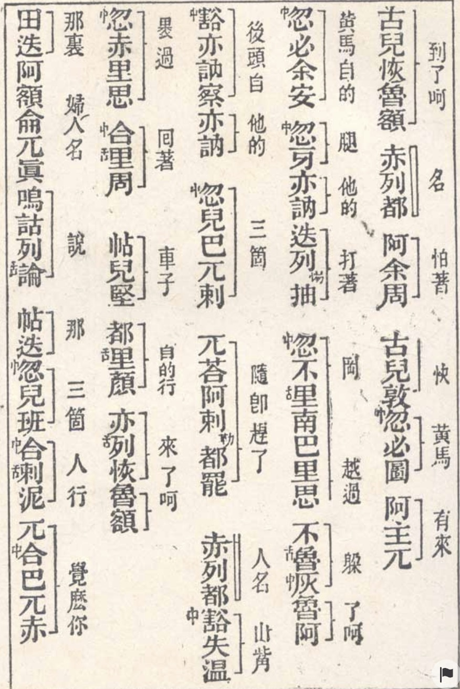

奇书蒙古秘史
围绕蒙古史与文本阅读展开。
Non-fiction 返回目录 来源：奇书蒙古秘史.docx

奇书《蒙古秘史（脱必赤颜）》
金庸在《射雕英雄传》的小说结尾附录中有以下文字： 成吉思汗的事迹，主要取材于一部非常奇怪的书。这部书本来面目的怪异，远胜《九阴真经》，书名《忙豁仑纽察脱必赤颜》，一共九个汉字。全书共十二卷，正集十卷，续集二卷。十二卷中，从头至尾完全是这些叽哩咕噜的汉字，你与我每个字都识得，但一句也读不懂，当真是“有字天书”… 原来此书是以汉字写蒙古话，写成于一二四○年七月。“忙豁仑”就是“蒙古”，“纽察”在蒙古话中是“秘密”，“脱必赤颜”是“总籍”，九个汉字联在一起，就是《蒙古秘史》。此书最初极可能就是用汉文注音直接写的，因为那时蒙古人还没有文字。…… 学识渊博的査先生引经据典，在小说中活用历史知识典故，使得作品更有意境，当然是没有错的。但就论《蒙古秘史》这本书来说，这里是有错误的。
他说『此书最初极可能就是用汉文注音直接写的，因为那时蒙古人还没有文字。』其实并非如此。《蒙古秘史》这本书实际上是用偎吾儿蒙古文书面语书写，藏于蒙古朝廷，元末明初时被朱元璋所得。完全是为了培养翻译人才，交给翰林院通晓蒙语的大臣火原洁用汉字表音，旁边附加汉语简明翻译而成。并且改了书名叫《元朝秘史》。
甚至原来的蒙古名字就叫『脱必赤颜』，意思是『合集』，前面没有前缀。后面不知道为何给起了一个『忙豁仑纽察脱必赤颜』的名字，虽是蒙古语，有可能就是明朝通蒙语的大臣自己加的名字，使之更加正确。（原来的蒙古文版本，后文特用《脱必赤颜》来描述）。与另外一本蒙语翻译教材，蒙汉对照的生字表《华夷译语》同时出版。
査先生还犯了一小错误。倘若你拿到一本《蒙古秘史》（又叫《元朝秘史》），并不存在看不懂的问题，因为汉语的逐词翻译，阶段性总译，详细且友好的标注在旁边，虽然明代使用的汉语和现在有不同，且是文言文，但不存在阅读障碍。不仅如此，旁边的汉字旁译，甚至连名称，词性，所有格等语法现象都一一标明，可谓生怕你看不懂。
此书原本就是一个翻译培训教材，并不是要用来做史料，但由于蒙古原本早已遗失，这本汉语表音本成了世界唯一孤本。
就是这个这个版本，明廷当时将其用作培训朝廷译员的教科书，故印数无多，自明代以来尚未发现洪武时初刻的十二卷全本，仅有从内阁大库搜检到的四十一枚残页而已。之后能看见，能流传的都是手抄本。
即便如此，因为其史料价值和语言学价值超级宝贵，随成为一本奇书。以至于査先生说：
这部书全世界有许许多多学者穷毕生之力钻研攻读，发表了无数论文、专书、音释，出版了专为这部书而编的字典，每个汉字怪文的词语，都可在字典中查到原义。任何一个研究过去八百年中世界史的学者，非读此书不可。 他说得并没有错。此明中叶以后，研究这本通篇『天书文』的《蒙古秘史》这本书的源流和版本考据，渐渐成了学术界的热门话题，研究文章和专注汗牛充栋，不计其数。许多学者穷尽一生考据其中。
道光以降，有识之士鉴于列强入侵，国运衰微，率多潜心史地研究，西北史地研究遂成为重点。此后，《秘史》在朝野的流传更趋广泛，史地研究者援引其记载的事例也就随之增多。
从清代的钱大昕、毕沅，晚晴的魏源，王国维到民国陈垣，再到近代的余大钧，再到国外的汉学家，无不深陷其中，乐此不疲。许多原本悬而不解的事情，终于慢慢厘清。但即便如此，这本书的不明之处依然很多。
《蒙古秘史》并不是一个标准的历史书。因为蒙古人一直没有汉族人很早就形成的历史观和写史书的传统。就爱写历史这一点，汉族人可能是世界上最强的民族。很多历史上的民族，即便是有文字，也没有记载历史的传统，比如印度，也有蒙古。关于后者，萨伽巴思巴定吐蕃文字基础的蒙古文之前，其实蒙古是有文字的，即回纥蒙古文，也就是《秘史》所写的文字。
蒙古人的历史和传说故事并无分别。蒙古人自古以来就有讲故事代替严格叙事的传统。撰写《蒙古秘史》的草原史臣们的初衷并非执着于修史，而是编纂一部黄金家族起源、发展的“故事”。 蒙古人自古以来有保持对自己的起源和世系的记忆的习惯，……父母要对出生的每个子女解释有关氏族和谱系的传说，这种规矩永远为他们蒙古人所遵守。这一点在其他很多民族，如藏族，北欧民族都存在，不足为奇。
但是当成吉思汗崛起和建立霸业之后，蒙古人在中原和中亚西亚建立了庞大的帝国。对于成吉思汗的记忆和蒙古先祖的记忆，从民间的普通叙事需求就上升到一种国家层面的需求。
其实从成吉思汗去世之后就开始，从窝阔台，贵由汗再到蒙哥，忽必烈。对于伟大英雄成吉思汗事迹的记忆留存，编辑和整理，成为宫廷的急切要求。特别是经过忽必烈的系统指令，终于在他当政的头十年，《脱必赤颜》这本蒙古源流和成吉思汗事迹的书面记录文件终于最终成型。
自近代以来，一种将只有汉语音译版本传世的《秘史》重新翻译回原始蒙古语的想法和实践，开始慢慢萌芽。这真是历史上一件怪事。历史上一门语言如果死亡，则其历史文献变存在看不懂的危险。例子举不胜举，比如古代埃及文字，吐火罗等西域文字。
但翻译《脱必赤颜》回蒙古文，完全不是识读困难，而是因为民族感情。其原因只是因为原始文字丢失。虽说偎吾儿蒙古文并非完全死文字，但根据汉语音译回溯到原始蒙古文，也是一件极为困难的事情。
最早这么干，且有成果的人是蒙古的呼伦贝尔镇国公成德公。他在民国初年1917 年的时候自行将《秘史》翻译回溯为蒙古文。其使用的是 1917 年的现代蒙古文，而不是古代偎吾儿蒙古文。后来的大学者巴雅尔和亦邻真的偎吾儿蒙语版也出版，在之后就是无数个版本。
而汉语版则比较复杂。原来明朝流传下来的并不能叫汉语版。一个是因为通篇汉语音译，几乎是天书，不会蒙语的人完全看不懂。而且旁边的逐字翻译和总译，并不是对原文的精确复刻，而是一种总体概括，类似于后来一种对外语小说的『缩写汉语本』或者『改写本』，并不能传达出原文的意思。
之后各类汉语大家都依照蒙语回溯版本和各种资料，重新完整翻译出《秘史》的汉语版本。如现在大家能看到的余大钧的翻译本。无论是哪一种版本，翻译都在其次，其主体部分是精彩的注释和考据。这也是我们说的『译注本』。
这本《脱必赤颜》之所以能够引发百年的研究热潮，除了其卓越的史料价值之外，更本身是一个史诗性文学作品。考据家在考据历史之余，也会被其强大的文学魅力所激荡，增添了考据的乐趣。
此书的语言风格极为草原风格，开篇就先声夺人，如同圣经《马太福音》开场一样，用史诗的语言描述了成吉思汗前面十几代先祖的名字，其用于『某某人生儿子某某』的句子格式，和圣经一模一样。这也客观反映出古代民族史诗的一种共性：重视血统。
这十代先祖的第一代，在《脱必赤颜》中叫孛儿帖赤那和他的妻子豁埃马阑勒。这两个蒙古名字，原本只是一个简单的蒙古名字，蒙古人种用动物的名字给自己起名是常有的事情，并且外号也是一个人的名字。
然而在明朝翻译本《元朝秘史》中被翻译为『苍狼』和『白鹿』。此翻译影响了日后很多以《元朝秘史》为底本的历史文献都一致说蒙古人是苍狼和白鹿动物相配的后代。只有极少数人有着正确的看法。
比如明代嘉靖年间学者凌迪知。他在《历代帝王姓系统谱》说：『 按元朝秘史云，元朝的人祖是天生苍色人与惨白女相配了，同度过腾吉思水到斡难河源头不儿罕山前，生一人，名为巴塔赤罕。』
这类关于动物和人名的误解，在后面很多史料中都出现过。比如扎木合在十三翼之战后用 70 口大锅烹煮『赤那』，被拉施特理解为『煮狼』，而其实这里的『狼』只是成吉思汗的近卫军外号。
这应该是一个美丽的误解，但是开启了百年来蒙古人说自己是苍狼后代的传说。人们更愿意相信这种美丽的故事，而不顾《脱必赤颜》原本老老实实的描述。
当叙述完这十代先祖名字之后，在成吉思汗十代祖先，孛儿只斤部落的开创者孛端察儿开始，《脱必赤颜》正式进入讲故事的状态，笔锋一转，开启了一个神奇世界的大门。
孛端察儿是一个血统可疑的人物。这一点，是《脱必赤颜》讲故事尤为精彩的地方。
孛端察儿，他的母亲，草原著名的美女阿阑·豁阿（豁阿就是美女的意思，在这一系列故事中，女性的名字都有这个后缀）早年随着自己家族，流浪到肯特山附近，嫁给当地人朵奔篾儿干，生了两个儿子：一为不古讷台，一为别勒古讷台。
这两个儿子后来都成为『尼伦』蒙古，即正统蒙古人的几大部落的祖先。这与阿伯拉罕的几个子孙成为以色列人十二部落的祖先极为相似。
有一天，朵奔篾儿干出去捕猎，遇到了一个烤鹿肉的人。朵奔篾儿干很饥饿，央求那个人给他鹿肉。那个人很大方，把几乎所有的鹿肉都给了他。原本想大快朵颐一顿的朵奔篾儿干在回来的路上，又遇到了一个父亲，带着一个瘦弱的儿子，在草原上惨兮兮地行走。
朵奔篾儿干仁慈地将鹿肉的一部分给了那个父亲，作为报答。那个人把自己的儿子给了朵奔篾儿干作为仆人。这个人日后成为朵奔篾儿干家重要的一个人。
在朵奔篾儿干死了之后，美丽的寡妇阿阑·豁阿又生了三个儿子，分别是不忽合塔吉、不合秃撒勒只、和故事的主角：孛端察儿。这让他和前夫生的两个儿子不古讷台和别勒古讷台大干疑惑。这是当然的，他们当然怀疑自己的母亲和家里的那个佣人私通生了三个儿子。
阿阑·豁阿觉察出了孩子们的这般议论。春季的一天，阿阑·豁阿煮熟风干羊肉，让五个孩子吃饱了肚子。接着让他们并排坐下后，给每人发了一支箭，令他们折断。孩子们很容易地折断了各自的一支箭。然后，阿阑·豁阿又把五支箭捆到一起交给孩子们去折。孩子们费了半天大劲，最终都未能折断这捆在一起的五支箭。
实际上，这种折不断几只箭的故事各个民族都有，但精彩点当然不在这里。
这么一来，孛端察儿就是个血统不纯的人了。作为成吉思汗的祖先，孛儿只斤部落的开创者，这个丑闻怎么圆回来呢？
于是，在故事中，阿阑·豁阿说道:“别勒古讷台、不古讷台两人对我所生三子以及父为何人一事充满了怀疑和猜测。你们的怀疑有道理。但你们有所不知的是，每到深夜有一发光之人从天窗飞进屋内抚摸我的腹部，其光芒都透入我的腹内。待到天亮时，才同黄狗般地爬将出去。你们怎能乱加猜疑!由此看来，必为上天之子，怎可与凡生相比?待将成为万众之主时，人们才会明白的呀!”
这种受命于天的传说，自然并不那么真实可爱。尤其是描述语『才同黄狗般地爬将出去』，更是将汉民族里面的天神形象糟蹋得一无是处，是人无法不联想起就是那个被鹿肉换回来的佣人半夜里偷摸出入的形象。
这就是《脱必赤颜》的魅力，它介乎于神话和真实的模糊地方，让你既没有那种祥瑞万端的刻板形象，也有力地维护了成吉思汗高贵血统，夹杂着野蛮，亲切和神圣，融于一体，极有草原风格。
后来，美丽的母亲阿阑·豁阿死了。这个母亲形象像极了成吉思汗的母亲诃额伦的形象。都是丈夫死后含辛茹苦，苦苦带大自己的几个儿子，却无法阻止儿子们之间分崩离析，自相残杀的事实。
果然，母亲一死，五个儿子立刻分家，孛端察儿因为最为愚笨，直接被褫夺了分家产的权力，一个人流浪到茫茫大草原上，靠着养一头孤鹰，捕杀鸟兽为生。生活极为寒苦。这几乎又是成吉思汗小时候艰苦生活的复刻。
后来，孛端察儿的一个哥哥爱惜它，两人联合起来，武力俘虏了一群没有头领，四处流浪的小部落，成为了自己的部属，顿时揭开了草原各部落的大幕。
当然，这并不意味在孛端察儿收服这个小部落之前没有草原部落，只不过故事就是从这里开始讲起来的。在这里，《脱必赤颜》揭示了一个特别重要的血统疑问。
在孛端察儿接手了一个小部落之后，遇到了一个美丽的孕妇，于是娶了她。这个孕妇生了一个外人的儿子，因为是『外姓』，蒙古语叫『扎惕』，叫故名为札只剌歹，后成札答兰氏祖先。
札只剌歹的儿子土古兀歹，土古兀歹的儿子不里不勒赤鲁，不里不勒赤鲁之子合剌合答安，合剌合答安的儿子便是札木合。这就是日后和成吉思汗有着复杂渊源的扎木合的身世。
从《脱必赤颜》的角度看，如果说铁木真的祖先孛端察儿有点血统不纯，是一个外姓人的儿子，而在承认其来源字天神之后，真正血统不纯的倒是扎木合了。因为他的祖先在孛端察儿这里是一个来路不明的人，根本不是孛端察儿的子孙。其部落名字的词源就是『外姓』。
而成吉思汗的祖先则是孛端察儿的正妻之子，在《脱必赤颜》里面写得很清楚，不是那个孕妇，而是正妻所生的儿子巴林失亦那秃何必赤。此嫡子序列一直传到到合不勒汗，再到也速该，再到成吉思汗，血统高贵。
那么，在日后扎木合被拥戴为古尔汗，成为草原领袖，自认为是『白骨头』蒙古人，看不起低贱血统的黑骨头铁木真的时候，他是真的没想到《脱必赤颜》会把自己落入这个境界。
也许历史上永远也搞不清楚是怎么回事，但《脱必赤颜》的资料来源在于草原上那些和成吉思汗一起战斗过的勋贵耆老的回忆，那么替成吉思汗端正历史背景 就成了必然的原因。
《脱必赤颜》的行文风格雄健慷慨，具有那种史诗般的气质。此气质不通读原文，是无论如何都感受不到的。试看一例：第106节记叙札木合接到帖木真、王汗请他发兵一 起岀征蔑儿乞惕人的传话后，札木合立即说道：
“对帖木真安答（义兄弟）和脱斡邻勒汗兄两人去说: '我祭了远处能见的大囊, 我敲起黑牡牛皮的. 响声蓼蓼的战鼓， 我骑上乌雄快马， 穿上坚韧的铠甲, 拿起钢枪, 搭上用山桃皮裹的利箭， 上马去与合阿惕•蔑儿乞惕人厮杀。
余大钧评论：
在这段记叙、描绘中，不仅描写了当时骑兵的武器装备和他 们出发作战时的情状，而且刻画了札木合快人快语的豪迈个性、英勇的形象。 而我个人最喜欢的段落是成吉思汗的母亲诃额伦夫人被也速该强行抢夺，在也速该几个兄弟的押送下，悲愤地思念前夫的话语。
诃额仑夫人说道： “我的丈夫赤列都， 未曾逆风吹其额发， 未曾挨饿于野地。 如今他的一对发辫， 一个丢在背脊上，一个丢在胸前， 一个向前，一个向后， 他怎么如此狼狈地去了也！” 说完，她放声大哭。她的哭声震动了斡难河水，震动了深林草原。
如此一个女性被野蛮人强行抢夺，与心爱的丈夫分离的悲愤场面油然而生，力透纸背。如此场面，从文学创作上伤害了成吉思汗父亲也速该的道德形象，这在中原汉族地区的帝王历史记录里是绝对不会发生的。但这就是《脱必赤颜》的魅力所在。
目前对《脱必赤颜》这本书的具体成书时间并无定论，百年来有无数种争论。以 1240 年为最大的和蒙古国官方钦定年代。其理由为书中原著的第282节，即最后一节全文：
大聚会正在聚会，鼠儿年七月，各宫帐在客鲁涟河·阔迭额——阿剌勒（地方），朵罗安——孛勒答黑（与）失勒斤扯克两（山）之间留驻之时，写毕。
原因在于书中的主要叙述是在窝阔台大汗的第二年即故事结束，所以大部分人认为是在窝阔台登基汗位的那前后几年书籍完成。但其实按照《脱必赤颜》的各种流失在外面的手抄本看，此书后面还包括蒙哥的各种事迹，似乎根本不可能在窝阔台的时候就宣布写完。
目前有两种解释。第一就是这里的鼠年并不是窝阔台当大汗的那个鼠年，而是之前后的1228，1252，1264，1276等诸多年份。还有一种主流观点看，这本《脱必赤颜》不是一个人写的，也不是一次性写完的，在窝阔台那年初稿写完之后，又不断地增补添加，只是不知道出于什么理由，也许是翻译者觉得这一段特别像『结束段落』，在明朝翻译这本书的时候，将这一段话放到了最后，造成了误解。而实际上这一段根本就是在前面。
而更加造成误解的是，目前明朝翻译本，也就是唯一的完整孤本《元朝秘史》，就截止到窝阔台的事迹。而贵由，蒙哥汗的事迹，是出现在别的摘录《脱必赤颜》的诸多文献之中，并没有出现在此明朝版本之中。估计原因为至始至终，《脱必赤颜》都没有形成一个完整的书籍，所以明朝翰林也只选择了其主要部分，并且不再考究历史成书时间。所以最后这个成书日期已经成了一笔糊涂账。
但可以肯定的是，这本书的绝大部分故事在窝阔台部分就结束了，后面的那些史料从写作技巧和精细程度上都远远不能和主体部分相比。所以此书为不断增补的写作方式，就成了学术主流。关注成书时间到底是那一年，渐渐失去了意义。
这本《脱必赤颜》以讲故事的方式讲述了成吉思汗的家世和丰功伟业，是这本书的主体。而在忽必烈当上元朝皇帝之前，这本书完全是一本秘密的皇家藏书，完全不对外公开。有蒙古贵族偷看此书，甚至被处于刑罚。
后代伊朗著名历史学家拉施特的《〈史集〉第一卷序》云：“然而[蒙古人和突厥人之]信史，逐代均用蒙语、蒙文加以记载，唯未经汇集整理，以零散篇章形式[保存于汗的]金库中。它们被秘藏起来，不让外人，甚至[不让他们自己的]优秀人士阅读；不信托任何人，深恐有人获悉[其中所载各事件]。”
既然是成吉思汗的丰功伟业，为什么不能公开呢？这就是汉族读者思维中最不能理解的事情。这主要是因为在这本原始故事书中对太祖成吉思汗有许多不讳言的地方，著名的十三翼之战，就是铁木真和安答扎木合的战争，诸多材料都写铁木真获胜，只有《脱必赤颜》直接写铁木真战败，逃离战场。这样的真实情况还包括了铁木真的妻子被人抢去，生下血统可疑的术赤的原始记载。这些对神化成吉思汗不利的材料，当然是不能随便给人看的。
尤其是成吉思汗年幼时杀死异母弟别克帖儿、成吉思汗年幼曾被泰赤乌人俘虏但得到赤老温一家私放、成吉思汗的妻子孛儿帖曾被蔑儿乞人掳走、成吉思汗曾投靠札木合、成吉思汗在十三翼之战被札木合打败并退守深山、成吉思汗四位妻子的史事、长子术赤及次子察合台的争拗、窝阔台重病时弟弟拖雷饮下有咒语的酒而死等等，大量史实在其他史书绝口不提或轻轻带过，却详细地记载于《脱必赤颜》之中。
在忽必烈执政的早期，坐稳了汉家江山的忽必烈开始依照汉族封建王朝的习惯编辑『国史』，这里的国史，指的是忽必烈自行编撰的皇家历史，并非指早已成书，但未经整理的《脱必赤颜》。但是在明后以来的学者，在说道『国史』的时候，对是忽必烈编撰的各个皇帝的『实录』还是这本《脱必赤颜》，并没有加以区分，造成混淆。
在修订国史中，其最重要的历史资料就是这个《脱必赤颜》，尤其是成吉思汗一生的历史，几乎就是唯一的来源。比如元朝时的一本历史书《圣武亲征录》就基本是对《脱必赤颜》的照抄。而明代修编的《元史》，其成吉思汗部分，也基本就是对《脱必赤颜》的简单照搬。
不仅如此，这本《脱必赤颜》也是蒙古之外的人研究蒙古早期历史的唯一来源。在忽必烈编辑完成蒙古早期历史之后，将所得出的成果封装成一本辉煌的皇家经典《阿勒坛·迭卜帖儿（金册）》，交给蒙古帝国的四周的臣服国家，包括各个汗国，作为官方正式钦定历史。而伊朗大史学家拉施特写出的《史集》，其中第一卷，讲述蒙古早期历史的史料，虽然混合了各种自己的历史采集资料，但其中大部分是从《金册》，其实也就是从《脱必赤颜》中抄录而来。
后面蒙古僧侣罗卜藏丹津写出来的蒙古史书《黄金史》，虽然内容主要讲蒙古和藏传佛教的关系，但其中包含了成吉思汗等早期蒙古历史，基本彻头彻尾的全程转录自不知道何处流传出来的《脱必赤颜》。
也正因为此，后来蒙语版的《脱必赤颜》和蒙语版本的《金册》都消失在历史时空之中，但接着这些『抄袭』之作，反而得到了某种程度上的保留。
即便如此，这本《脱必赤颜》也还是被蒙古宫廷严格秘密搜藏，任何人也看不到。一直到元朝末年，朱元璋的远征军攻入北京，元顺帝仓皇出逃，来不及带走皇家经卷，所以《脱必赤颜》才落入朱元璋手中。
其实，朱元璋并没对这本神秘的《脱必赤颜》有多大兴趣，仅仅把它当做蒙语教材使用，后来他的儿子永乐编辑类书《永乐大典》的时候，作为历史资料的《元朝秘史》被编入了大典，就放在那里了。
谁知道，那些内廷编辑大典的官员发现了《秘史》，在永乐二年，有编纂官员利用职务之便抄了出去，省去如天书一般的汉语音译原文，只抄录汉语翻译，装订成两册，带出宫廷，流入民间。
总译抄本的出现，拉开了《秘史》在朝野广为流传的序幕，启迪后人以此为线索搜求、抄录《秘史》的各种文本，用之于学术研究，特别是史学研究。也开启了《秘史学》这门学问。
这也得感谢这些私自抄书回家的下级官员，没有这些『窃书贼』，民间研究『蒙古秘史』就无从谈起。须知，古代编辑大型类书只给皇家用，从不向百姓开放。正是私自流出的版本，使得那些明清关心『边事』的大小知识分子，得以获得第一手的资料，掀起了汉族对异族人文历史的兴趣和研究。
在诸多学者上百年的努力之下，《秘史》中的时间，人名，地名，历史错误和蒙古语言学的考证，已经到了恐怖的程度。整个《秘史》总共 282 个自然段，全数的汉语翻译字数也不过十万，但历史上对这本书的考据文字，早已超过千万，即使到今天还在持续不断地出现。
另外，西方对东方学的热心，以及蒙古和中亚历史的热度，使得这本极为珍贵的《脱必赤颜》成为一个显学，越来越热。
历史上对单一本书版本，修订和考证如此之孜孜不倦，如此穷经皓首，如此连绵百年的兴趣的例子，除了《红楼梦》，也就是这本《蒙古秘史·脱必赤颜》了吧。